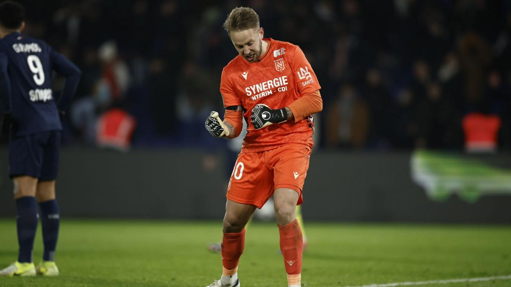
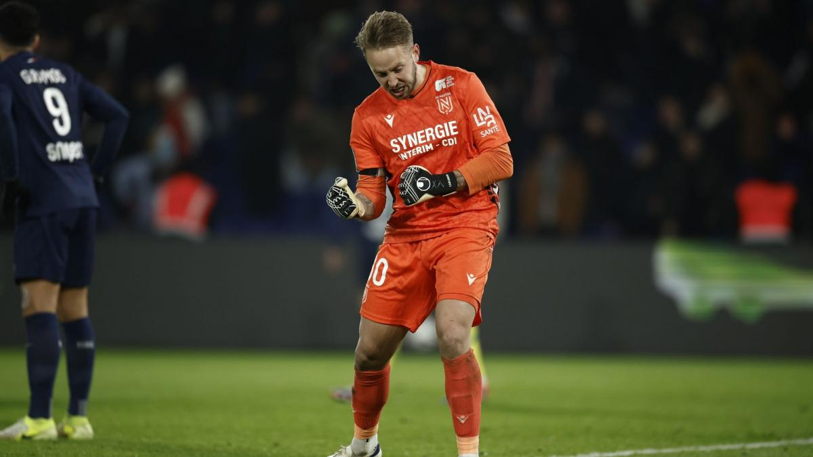

FC NANTES
Un club légendaire !
Sa devise :
"Élégance et tradition" ces deux principes sont fortements encrés dans l'esprit du FCN : José Arribas, figure légandaire du FC Nantes, à laissé une empreinte indélébile sur ce club. en tant qu'entraineur, son style lie ses deux principes, le club à tellement marqué par cette entraineur en a decidé de faire sa devise.
Ses couleurs : aux côtés de Marcel Saupin
futur président du club, Jean Le Guillou, un entrepreneur spécialisé dans le BTP, fait partie des membres fondateurs. Ce dernier possédait sa propre écurie de chevaux, dont l’un, baptisé Ali Pacha, était monté par un jockey portant une casaque jaune et verte.
Ce cheval connu pour etre imbattable à grandement inspiré le créateurs du club. Ces couleurs ont perduré dans le temps et sont jusqu'à aujourd'hui Le plus grand symbole du football club de Nantes
Un incroyable palmarès :
 


Championnat de France :
- 1964/1965
- 1965/1966
- 1972/1973
- 1976/1977
- 1979/1980
- 1982/1983
- 1994/1995
- 2000/2001
4 Coupes de France :
- 1978/1979
- 1998/1999
- 1999/2000
- 2021/2022
2 Trophées des champions
- 1965/1966
- 12001/2002
À, noté que Le FC Nantes détient le plus grand nombre de match sans défaite de Ligue 1 avec 32 matchs de bohneur. (L'entraineur qui à reussi cette exploit est Jean-Claude Sudeau,Sa reputation est telle qu'il est souvent confondu avec José Arribas.(Deux très grosses légendes, qui a mon avis sont égaux en terme de leur impacte sur ce club) )